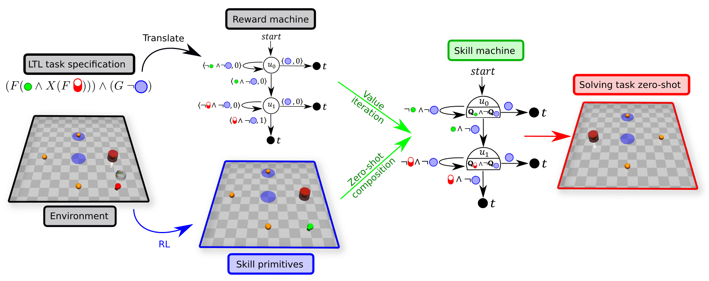
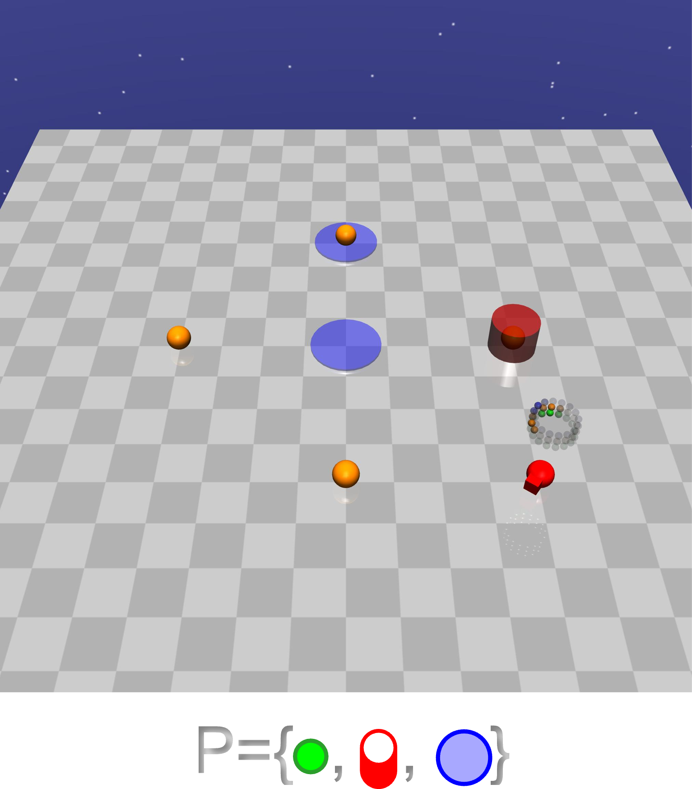
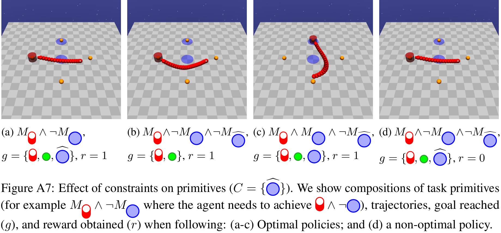
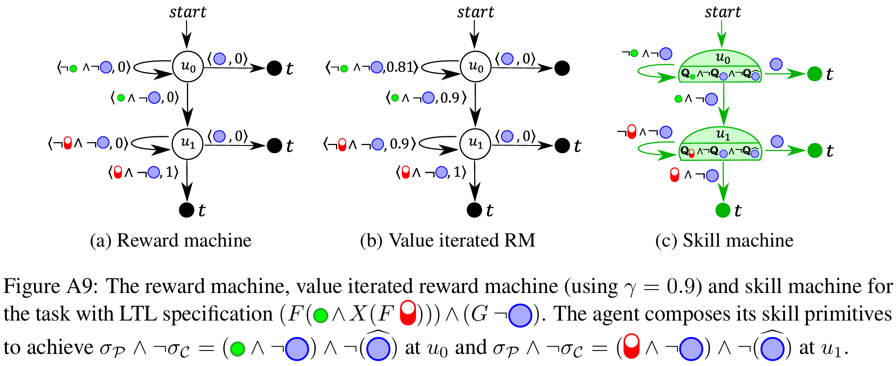
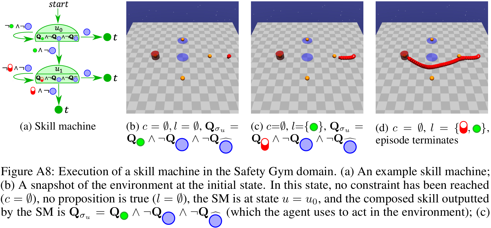
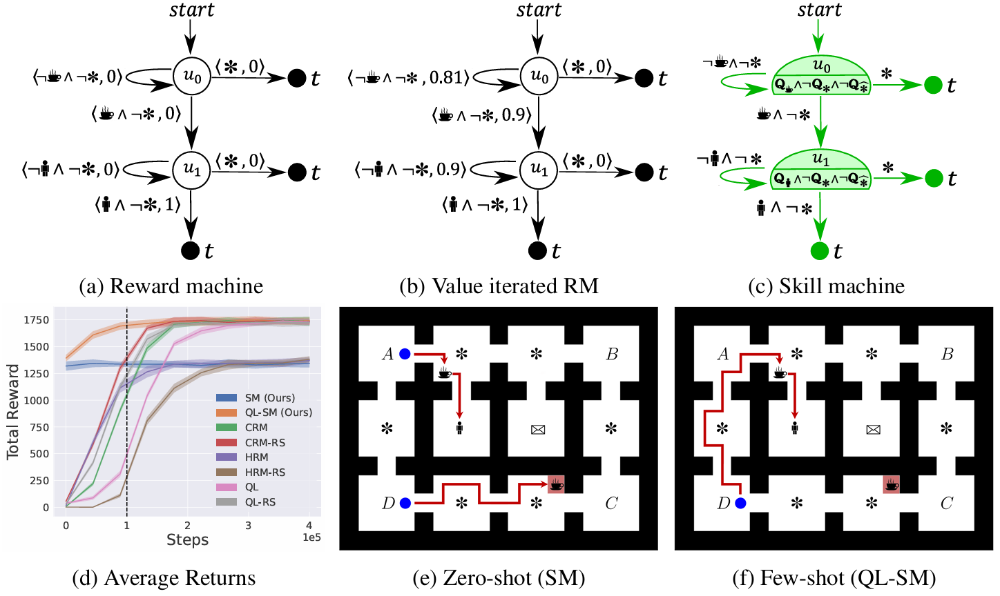
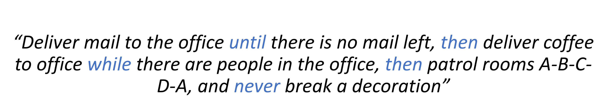
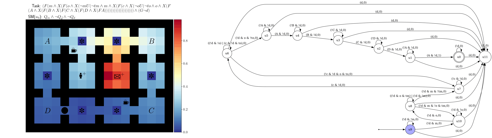

Geraud
Nangue Tasse


Skill Machines: Temporal Logic Skill Composition in RL
Paper at ICLR 2024 Poster #17719

RL Multi Task Transfer Learning Temporal Logic Composition Zero-shot Few-shotAbstract
We introduce Skill Machines;finite-state machines that encode a sequence of skill compositions to satisfy temporal-logic tasks with guarantees. Starting from a task specified in linear temporal logic (LTL), we plan over its reward machine, then act greedily with respect to composed value functions to obtain zero-shot policies that are near-optimal and satisficing. We further show how these policies seed few-shot optimal learning using any off-policy RL algorithm.
Motivation: Multipurpose Robots Need Compositionality
Imagine a service robot in an office world: Deliver mail until none is left, then deliver coffee while people are present, then patrol rooms A-B-C-D-A, and never break a decoration. We want tasks to be human-understandable and solvable without relearning each time a new specification is presented.
Tasking with Temporal Logic
We use a formal language such as LTL with familiar operators: $\neg$ (NOT), $\land$ (AND), $\mathsf{X}$ (Next), $\mathsf{F}$ (Eventually), $\mathsf{G}$ (Always), etc.
Example: Navigate to a button then to a cylinder while never entering blue regions. LTL over high-level events $\mathcal{P}=\{\text{button},\text{cylinder},\text{blue}\}$ in a Safety-Gym-like world: $\\$ $\mathsf{F}(\text{button}\;\land\;\mathsf{X}\;(\mathsf{F}\;\text{cylinder}))\;\land\;\mathsf{G}\neg\text{blue}$.

From LTL to Reward Machines
LTL specifications can be compiled into reward machines (finite-state automata whose transitions carry rewards). Planning (e.g., value iteration) over the reward machine reveals which skill to execute at each automaton node.
The Roadblock: Two Curses of Dimensionality
If an agent only learns atomic skills (e.g., go to button, go to cylinder), it cannot immediately solve tasks such as go to button while avoiding blue. In general, there are super-exponentially many Boolean expressions the agent may need to eventually satisfy (spatial curse) and super-exponentially many expressions it may need to keep always true (temporal curse).
Our Solution: Primitives for Spatial and Temporal Structure
Spatial: Task & Skill Primitives
- Task primitives $\mathcal{M}$: composable MDPs for eventually satisfying each proposition.
- Skill primitives $\mathcal{Q}$: World Value Functions (WVFs) for each task primitive.
Unlike regular value functions, WVFs are composable: we can compute the value of any Boolean expression over task primitives without further learning.
Temporal: Constraints
We augment the state of task primitives with constraints $\mathcal{C}$; propositions that must remain True/False over an episode. This lets us reuse the same spatial skills under always-avoid/always-maintain requirements.

Skill Machines
A Skill Machine (SM) is a finite-state controller that encodes the sequence of composed skill primitives to satisfy a temporal logic task.We obtain SMs by:
- Planning over the reward machine (e.g., value iteration) to compute transition values.
- Greedily selecting the Boolean subgoals to pursue at each node.
The resulting policy executes skills greedily with respect to the composed WVFs at each node. This yields zero-shot satisfaction with near-optimal performance under mild reachability assumptions.

Zero‑shot Transfer
Once the SM is built, the agent can immediately solve new tasks such as: Go to a hazard, then to a cylinder, then again to a cylinder, while avoiding hazards. No additional learning is required.

Few‑shot Optimality via Off‑policy RL
Zero-shot policies from SMs provide strong initial performance. To reach task-specific optimality when assumptions are violated, we continue learning few-shot with any off-policy method (e.g., Q-learning), using the SM as guidance.

In office world tasks (e.g., deliver coffee and never break a decoration), QL-SM improves upon the zero-shot SM and reaches optimal performance; SM and QL-SM outperform representative baselines.
Takeaways
- Zero-shot, near-optimal temporal & concurrent composition via WVF-based Skill Machines.
- Derived directly by planning over reward machines; satisfaction guarantees.
- Few-shot fine-tuning yields task-optimal policies with standard off-policy RL.


References
- Camacho, A. et al. LTL and Beyond: Formal Languages for Reward Function Specification in RL (IJCAI, 2019).
- Icarte, R. T. et al. Reward Machines for High-level Task Specification and Decomposition (ICML, 2018).
- Nangue Tasse, G. et al. World Value Functions (RLDM, 2022).
- Nangue Tasse, G. et al. A Boolean Task Algebra for RL (NeurIPS, 2020).
- Liu, J. X. et al. Skill Transfer for Temporally-Extended Task Specifications (arXiv, 2022).